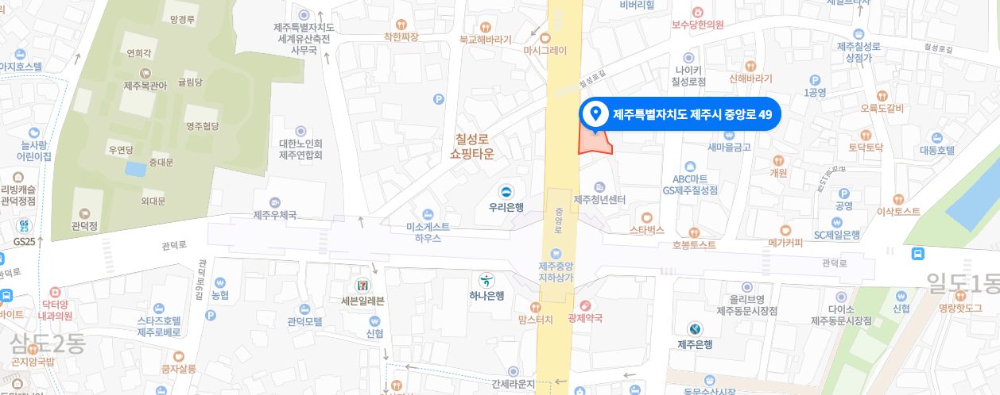

오시는길

- 주소
-
- 임시 사무실 제주특별자치도 제주시 중앙로 49, 3층 (대영빌딩)
※ 현재 제주시소통협력센터 건물
리노베이션 공사로 인해
임시 사무공간으로 이전하였습니다.
- 운영시간
-
- 사무실 월-금 09:00-18:00
※ 토,일요일, 공유일 휴무입니다.
- 연락처
-
- 전화번호 064) 759-8556
- 팩스번호 064) 759-8557
대중교통 안내
| 정류소 | 버스 노선 번호 | 하차후 이동경로 |
|---|---|---|
| 관덕정 |
|
관덕정 버스 정류소에서 하차 후 동문로터리 방면으로 5분 도보 |
| 중앙로(현대약국) |
|
중앙로(현대약국) 정류소에서 하차 후 탑동 방면으로 5분 도보 |
| 동문로터리 |
|
동문로터리 정류소에서 하차 후 관덕정 방면으로 3분 도보 |